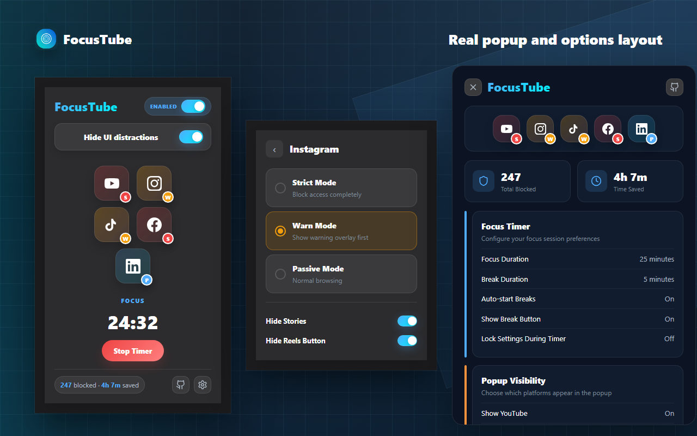

Block immediately
Redirect away from a distracting route or cover the targeted surface before it can take over the session.
Open-source browser extension
Block Shorts, Reels and distracting feeds without blocking the websites you still need.
View source on GitHub · MIT licensed

The core idea
Most website blockers make the entire platform unavailable. FocusTube targets the parts that pull you into repeated scrolling while leaving useful pages within reach.
Supported platforms
FocusTube uses separate rules for every platform instead of treating every feed the same.
Block Shorts routes and hide Shorts navigation, shelves, and selected subscription-page clutter.
See YouTube controlsBlock Reels and Explore routes, then optionally hide the Reels button and Stories tray.
See Instagram controlsCover common feed, search, live, photo, and video routes while keeping utility pages available.
See TikTok controlsBlock Reels paths and hide targeted Reels navigation, Stories, and people suggestions.
See Facebook controlsCover the main feed and hide the Add to your feed card without blocking jobs or messages.
See LinkedIn controlsHow it works
Set a mode per platform, then change visual hiding controls separately.
Redirect away from a distracting route or cover the targeted surface before it can take over the session.
Show a warning first. You can leave, or choose Watch Anyway for the current supported surface.
Do not block the route. Optional visual hiding can still remove selected buttons, shelves, or feed areas.
Before and after
Shorts navigation and shelves can be hidden while subscriptions, regular videos, search, and the rest of the site remain available.

Focus tools
The timer is secondary to the blocker, but useful when you want one defined work session.
Start a work timer from the popup, use configurable break durations, and optionally lock settings while the timer is active.
Receive browser notifications when focus or break timers finish. Notifications can be turned off in settings.
See a local blocked count and time-saved estimate in the popup. These values remain in browser-local storage.
Privacy
FocusTube is designed to work locally. It does not need an account or a project-controlled server.
Open source
FocusTube is MIT licensed. Its source, release history, tests, security policy, and contribution process are public.
Review the extension code, manifests, tests, releases, and reported issues.
A public self-certification checklist for open-source project practices.
A separate baseline badge covering defined security and project hygiene criteria.
Install FocusTube
Available from the official Chrome, Firefox, and Microsoft Edge extension stores.